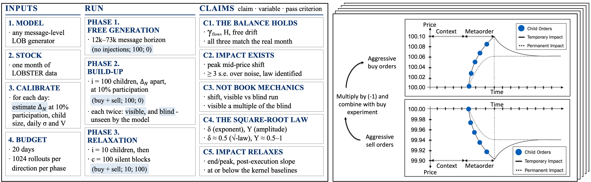
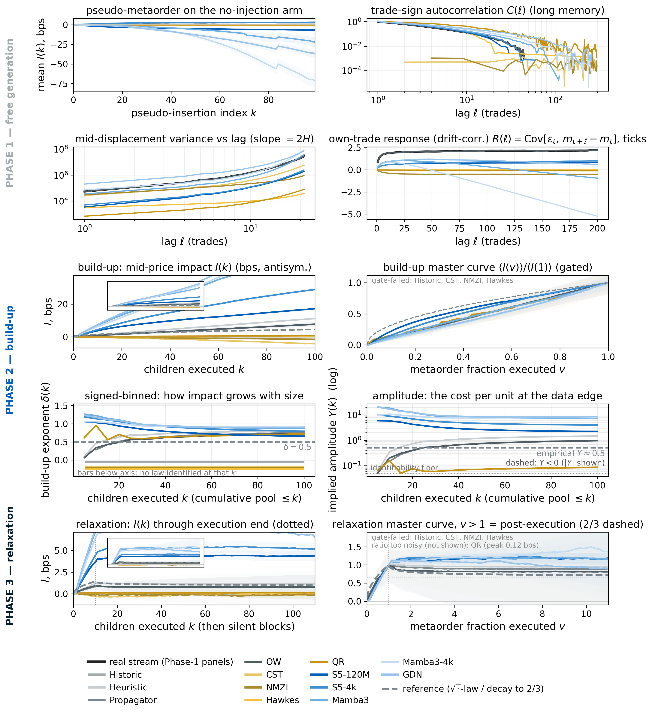

University of Oxford · British Open-ended Learning and Discovery Lab (BOLD) · †also University of California, Los Angeles
Poster · QuantMinds International 2026, London
Market impact emerges in generative order-book models trained only on next-token prediction. The benchmark measures whether that impact is the model’s own and whether it follows the laws of real markets.

When you buy a large amount of a stock, your own buying pushes the price up. That push is market impact, and in real markets it follows a remarkably stable law3:
I(Q) = σ · Y · (Q / V)δ
With δ = 0.5 this is the square-root law: an order four times larger moves the price only twice as far. Once trading stops, a real book gives back about a third of the move.
Realistic market impact is essential for generative limit order book (LOB) models to serve as world models for trading agents. If a simulator misprices this mechanism, agents learn policies that are optimal in the simulator but wrong in the real market. Existing metrics assess generated streams purely through distributional comparison with historical data, leaving counterfactual response to an agent’s own orders largely unexplored. Here, we show that market impact emerges naturally in neural LOB generators trained solely for next-token prediction. We inject execution-style metaorders into five autoregressive models across five NASDAQ stocks, measuring the response using estimators from the empirical impact literature, validated on baselines whose physics is known in advance. Our benchmark evaluates any message-level generator in three phases: free generation (reading order-flow persistence against price diffusivity); metaorder injection (yielding the impact law’s exponent and amplitude); and a post-execution window (measuring relaxation). In addition, comparing each visible injection to a blind, simulator-only control isolates the model’s learned response from standard book mechanics. For every model on every stock, we measure how the impact responds as a function of cumulative metaorder participation. Interestingly, we observe emergent impact in generative models of market data, with exponents in the range of 0.63 to 1.21, slightly above the traditional 0.5 of the square-root law of impact. In the family of models tested, we are so far unable to observe impact decay during relaxation. We attribute this to the still-short context windows of the models. We release the benchmark as open source to validate future generative models for market data.

| Model | Exponent δ | Amplitude Y | Visible / blind | End / peak | C1–C5 |
|---|---|---|---|---|---|
| Real market | ≈ 0.5 | ≈ 0.5 | – | ≈ 2/3 | – |
| S5-120M | 0.66 ± 0.05 | 2.24 | 21 | 1.19 | ✗✓✓✗✗ |
| S5-4k | 0.79 ± 0.06 | 4.00 | 26 | 1.15 | ✗✓✓✗✗ |
| Mamba3 | 0.87 ± 0.06 | 7.65 | 9.5 | 1.16 | ✗✓✓✗✗ |
| Mamba3-4k | 0.93 ± 0.05 | 8.38 | 5.0 | 1.36 | ✗✓✓✗✗ |
| GDN | 0.90 ± 0.05 | 8.57 | 12 | 0.88 | ✗✓✓✗✗ |
| Historic replay, negative control | no law | – | – | – | ✓✗··· |
| Propagator, positive control | 0.76 | 0.98 | – | 0.89 | ✓✓·✗✗ |
C1 the balance holds · C2 impact exists · C3 not book mechanics · C4 the square-root law · C5 impact relaxes. ✓ pass, ✗ fail, · not decidable. The neural signature ✗✓✓✗✗ repeats on all five stocks; the paper’s table covers EA, NVDA, MSFT, AMD and GOOG. GDN falls below its peak only with its own drift of −127 ticks.
The open-source package holds the protocol, calibration, estimators, controls and reporting rules. Commands are in the code repository.
@misc{nigmatulin2026lobimpact,
title = {{LOB-Impact Benchmark}: Emergent Market Impact in
Generative Limit Order Book Models},
author = {Nigmatulin, George and Mohl, Valentin and Frey, Sascha
and Li, Kang and Marti-Shahandeh, Aramis and Cucuringu, Mihai
and Calinescu, Anisoara and Foerster, Jakob and Zohren, Stefan},
note = {Poster, QuantMinds International 2026, London},
year = {2026}
}